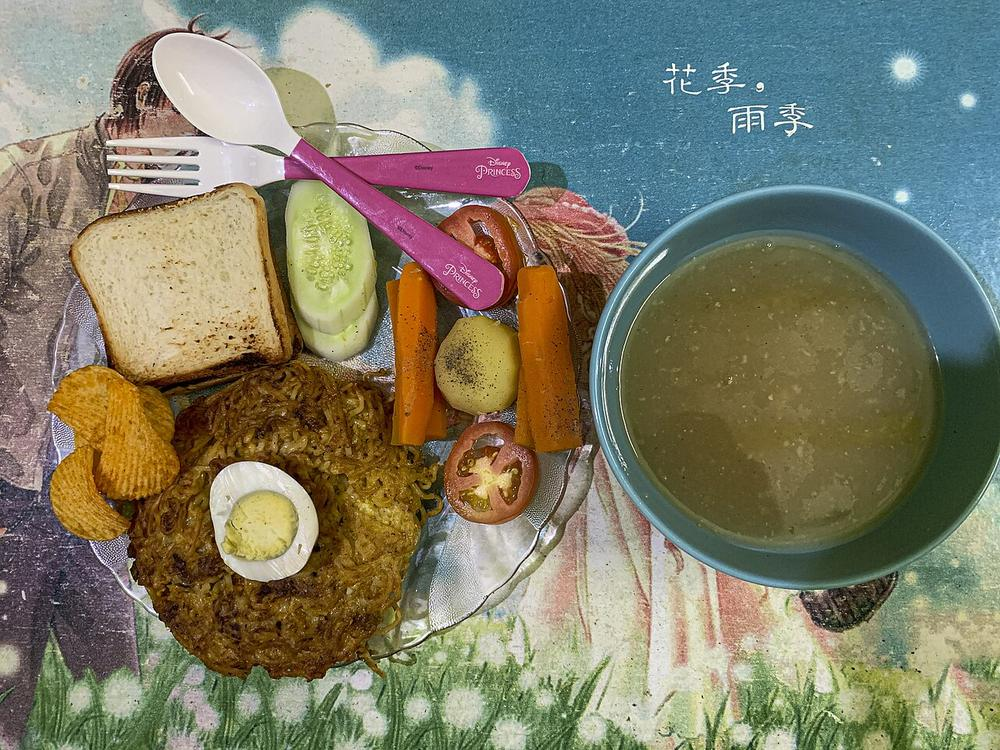

American Chopsuey
crisp fried noodles under a sweet-sour tomato gravy of shredded vegetables

Prep25 min
Cook30 min
Total55 min
Serves4
Difficultymoderate
Contains: gluten, soy
Ingredients
Quantities for 4.
- 250g dried egg-free noodles Noodles
- 5 large, blended to a puree Tomatothe sweet-sour base, in place of bottled ketchup
- 150g, shredded Cabbage
- 1, cut into matchsticks Carrot
- 1, sliced thin Capsicum
- 10, sliced on the diagonal French Beans
- 1, sliced Onion
- 4, whites and greens separated Spring Onion
- 8 cloves, finely chopped Garlic
- 1 tbsp, finely chopped Ginger
- 1.5 tbsp Soy Sauce
- 2 tbsp Vinegar
- 2.5 tbsp Sugarthe dish is frankly sweet; that is the point
- 1.5 tsp Kashmiri Chilli
- 3 tbsp Cornflour
- 3/4 tsp Black Pepper
- 500ml for frying the noodles, plus 2 tbsp for the gravy Neutral Oil
- to taste Salt
- 500ml Water
Cookware
stovetop, kadhai
Before you start
- Boil and dry the noodles at least 30 minutes before frying. Surface moisture is what makes hot oil erupt.
- Blend the tomatoes and pass them through a sieve if you want the glassy restaurant gravy; skip the sieve for a homier one.
- Fry the noodle nests first and keep them uncovered. Covered, they steam themselves soft.
Method
- Boil the noodles for 1 minute less than the packet says, drain, rinse cold and spread on a cloth to dry for 30 minutes.
- Heat 500ml oil in a kadhai to 180C and fry the noodles in four loose nests for 2 to 3 minutes each, until golden and audibly brittle. Drain on paper.Lower each nest in with a slotted spoon and hold its shape for the first 20 seconds so it fries as a disc.
- Heat 2 tbsp oil in a wide pan, add the garlic, ginger and spring onion whites and fry 40 seconds.
- Add the onion, carrot and beans and toss 2 minutes, then the cabbage and capsicum for 2 minutes more. Keep them crisp.
- Pour in the tomato puree with the kashmiri chilli and cook 6 minutes on a medium flame until it darkens and stops smelling raw.Do not shortcut this. Undercooked tomato makes the gravy taste tinny however much sugar goes in.
- Add 500ml water, the soy sauce, vinegar, sugar, pepper and 1 tsp salt and simmer 4 minutes.
- Slake the cornflour in 80ml cold water, stir it in and cook 2 minutes to a glossy gravy that pours thickly off a ladle.
- Taste and balance: it should land sweet first, sour second, with the soy behind. Adjust with a teaspoon at a time of sugar or vinegar.This balancing step is the whole dish. Take a minute over it.
- Set a noodle nest on each plate, ladle the hot gravy over the middle so the edges stay crisp, and scatter the spring onion greens.Sauce it at the table, not in the kitchen, if there is any delay between the two.
Storage
Keep the gravy and fried noodles apart: the gravy holds 3 days refrigerated and the noodles 4 days in an airtight jar. Assembled, it is soggy within 20 minutes.
Nutrition Good estimate
| Per serving615 g | Per 100 g | |
|---|---|---|
| Calories | 614 kcal | 100 kcal |
| Protein | 16.0 g | 3 g |
| Carbohydrate | 95.3 g | 16 g |
| of which sugars | 25.4 g | 4 g |
| Fibre | 12.1 g | 2 g |
| Fat | 21.2 g | 3 g |
| of which saturated | 2.8 g | 0 g |
| of which unsaturated | 17.0 g | 3 g |
Worked out from the listed quantities; most of the ingredient list could be weighed. Estimated from raw ingredients using USDA FoodData Central. Cooking changes are not modelled, and added salt is excluded, so sodium is not given.
Recipe v1.0.0, last updated 2026-07-31. Curated for Khaana and kept under version control.